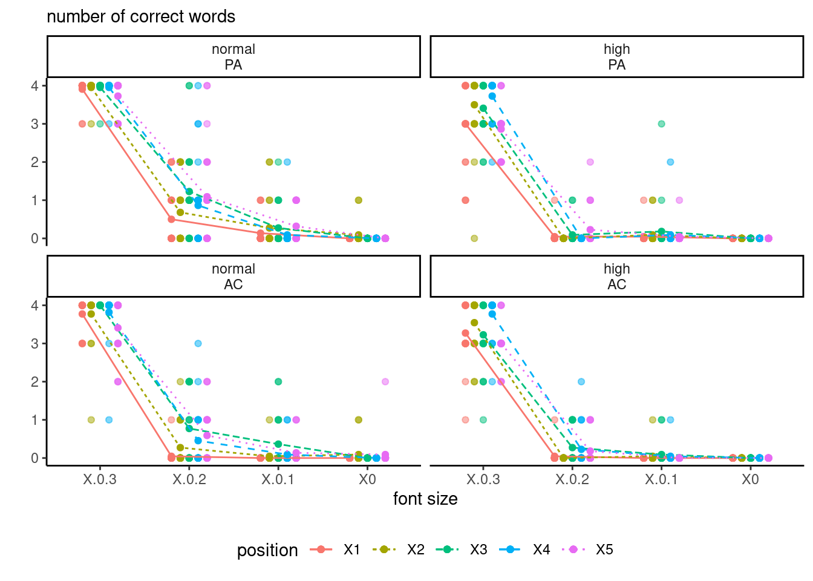

| term | sum of squares | df | stat | p-value |
|---|---|---|---|---|
| politideo | 48.49 | 1 | 21.35 | <0.001 |
| chefdax | 473.72 | 1 | 208.61 | <0.001 |
| brandaction | 34.24 | 2 | 7.54 | <0.001 |
| politideo:chefdax | 65.00 | 1 | 28.63 | <0.001 |
| politideo:brandaction | 1.56 | 2 | 0.34 | 0.71 |
| chefdax:brandaction | 0.62 | 2 | 0.14 | 0.87 |
| politideo:chefdax:brandaction | 0.66 | 2 | 0.15 | 0.86 |
| Residuals | 1587.33 | 699 | NA |
7 Multiway factorial designs
This chapter focuses on models with a mix of within-subject and between-subject factors. As the number of factor increases, so does the number of categories: this explains why \(2^p\) designs, where each factor has two options, are typically employed.
Any multiway ANOVA with two or more factor can be collapsed into a single one-way ANOVA: this is notably useful when there is a control group which is not related to the factor levels, as no manipulation takes place. The use of contrasts becomes critical since we can write any test for main effects, interactions using the latter through weighting.
Example 7.1 (Perceptions of cultural appropriation by ideology) We consider a three-way ANOVA from Lin et al. (2024). Their Study 4 focused on cultural appropriation for soul food recipe cookbook from Chef Dax, who was either black (or not), manipulating the description of the way he obtained the recipes (by peeking without permission in kitchens, by asking permission or no mention for control). Authors postulated that the perception of appropriation would vary by political ideology (liberal or conservative). The study results in a 3 by 2 by 2 three-way between-subject ANOVA.
For the \(K\)-way ANOVA, we always start with estimating the full model with all \(K\)-way interaction (provided there are enough data to estimate the latter, which implies there are repetitions). If the latter is significant, we can fix one or more factor levels and compare the others.
If we consider Table 7.1, we find that there is no three-way interaction and, omitting the latter and focusing on lower-level, a single two-way interaction between political ideology and the race of Chef Dax. We cannot interpret the \(p\)-value for the main effect of brandaction, but we could look at the marginal means.
Based on the data, we will collapse data to a one-way ANOVA comparing the three levels of brandaction and a 2 by 2 two-way ANOVA for the other two factors. The results are obtained by averaging over the missing factor.
We are interested in comparing the perception between the race of Chef Dax (black or not, as Southern Soul food cooking is more likely to be associated with cultural appropriation if Chef Dax is not black. We proceed with emmeans by computing the marginal means separately for each of the four subcategories, but compare the race of Chef Dax separately for liberals and conservatives due to the presence of the interaction.
data(LKUK24_S4, package = "hecedsm")
library(emmeans)
mod <- lm(appropriation ~ politideo * chefdax * brandaction,
data = LKUK24_S4)
# Marginal means for political ideology/Chef Dax
emm_racebypolit <- emmeans(mod, specs = "chefdax", by = "politideo")
emm_racebypolit |> pairs() #shortcut for contrast("pairwise")politideo = conservative:
contrast estimate SE df t.ratio p.value
not black - black 0.71 0.206 699 3.438 0.0006
politideo = liberal:
contrast estimate SE df t.ratio p.value
not black - black 2.03 0.135 699 14.998 <.0001
Results are averaged over the levels of: brandaction We see that the liberals are much more likely to view Chef Dax cookbook as an instance of cultural appropriation if he is not black; there is limited evidence of any difference between conservatives and liberal when Chef Dax is black. Both differences are statistically significative, but the differences (and thus evidence of an effect) is much stronger for left-leaning respondents.
We can look next at the brand action: we expect participants will view peeking less favorably than if Chef Dax asked for permission to publish the recipes. It’s tricky to know the effect of the control, as we are not bringing the point to the attention of participants in this instance.
# Marginal mean for brandaction
emm_brand <- emmeans(mod, specs = c("brandaction"))
emm_brand brandaction emmean SE df lower.CL upper.CL
peeking 2.56 0.108 699 2.35 2.77
permission 2.29 0.105 699 2.09 2.50
control 2.07 0.108 699 1.86 2.28
Results are averaged over the levels of: politideo, chefdax
Confidence level used: 0.95 # Joint test for the main effect of brandaction
emm_brand |> pairs() |> joint_tests() model term df1 df2 F.ratio p.value
contrast 2 699 5.091 0.0064A joint \(F\)-test, obtained by collapsing everything to a one-way ANOVA, shows that there are indeed differences. However, note that the averages of the three actions are much smaller than for race.
Example 7.2 (Visual acuity) We consider a model with both within-subject and between-subject factors. Data for a study on visual acuity of participants. The data represent the number of words correctly detected at different font size; interest is in effect of illusory contraction on detection. The mixed analysis of variance includes the experimental factors adaptation (2 levels, within), fontsize (4 levels, within), position (5 levels, within) and visual acuity (2 levels, between). There are a total of 1760 measurements for 44 participants in LBJ17_S1A, balanced. The within-subject factors give a total of 40 measurements (\(2 \times 4 \times 5\)) per participant; all of these factors are crossed and we can estimate interactions for them. The subjects are nested within visual acuity groups, The participants were dichotomized in two groups based on their visual acuity, obtained from preliminary checks, using a median split.
To fit the model, we rely on the aov_ez function from afex. By default, the latter includes all interactions.
LBJ_mod <- afex::aov_ez(
id = "id", # subject id
dv = "nerror", # response
between = "acuity",
within = c("adaptation",
"fontsize",
"position"),
data = hecedsm::LBJ17_S1A)
anova_tbl <- anova(LBJ_mod, # model
correction = "none", # no correction for sphericity
es = "pes")
#partial eta-square for effect sizes (es)| df1 | df2 | F | pes | p-value | |
|---|---|---|---|---|---|
| acuity | 1 | 42 | 30.8 | 0.42 | <0.001 |
| adaptation | 1 | 42 | 7.8 | 0.16 | 0.008 |
| acuity:adaptation | 1 | 42 | 12.7 | 0.23 | <0.001 |
| fontsize | 3 | 126 | 1705.7 | 0.98 | <0.001 |
| acuity:fontsize | 3 | 126 | 10.0 | 0.19 | <0.001 |
| position | 4 | 168 | 9.4 | 0.18 | <0.001 |
| acuity:position | 4 | 168 | 4.2 | 0.09 | 0.003 |
| adaptation:fontsize | 3 | 126 | 3.3 | 0.07 | 0.023 |
| acuity:adaptation:fontsize | 3 | 126 | 7.0 | 0.14 | <0.001 |
| adaptation:position | 4 | 168 | 0.6 | 0.01 | 0.662 |
| acuity:adaptation:position | 4 | 168 | 0.9 | 0.02 | 0.464 |
| fontsize:position | 12 | 504 | 9.1 | 0.18 | <0.001 |
| acuity:fontsize:position | 12 | 504 | 2.7 | 0.06 | 0.002 |
| adaptation:fontsize:position | 12 | 504 | 0.5 | 0.01 | 0.907 |
| acuity:adaptation:fontsize:position | 12 | 504 | 1.2 | 0.03 | 0.295 |
This is the most complicated model we tested so far: there are four experimental factor being manipulated at once, and all interactions of order two, three and four are included!
The fourth order interaction isn’t statistically significant: this means that we can legitimately marginalize over and look at each of the four three-way ANOVA designs in turn. We can also see that the third order interaction adaptation:fontsize:position and acuity:adaptation:position are not really meaningful.
The following paragraph is technical and can be skipped. One difficult bit with designs including both within-subject and between-subject factors is the degrees of freedom and the correct sum of square terms to use to calculate the \(F\) statistics for each hypothesis of interest. The correct setup is to use the next sum of square (and the associated degrees of freedom) from this. For any main effect or interaction, we count the number of instances of this particular (e.g., 10 for the interaction between position and adaptation). We subtract the number of mean parameter used to estimate means and differences in mean (1 global mean, 4 means for position, 1 for adaptation), which gives \(4=10-6\) degrees of freedom. Next, this term is compared to the mean square which contains only subject (here via acuity levels, since subjects are nested within acuity) and the corresponding variables; the correct mean square is for acuity:adaptation:position. In the balanced design setting, this can be formalized using Hasse diagram (Oehlert 2000).
We can produce an interaction plot to see what comes out: since we can’t draw in four dimensions, we map visual acuity and adaptation level to panels with different colours for the position. The figure looks different from the paper, seemingly because their \(y\)-axis is flipped.

Summary
- A multiway analysis of variance can be treated as a one-way analysis of variance by collapsing categories; however, only specific contrasts will be of interest.
- The number of observations increases quickly with the dimension as we increase the number of factors considered.